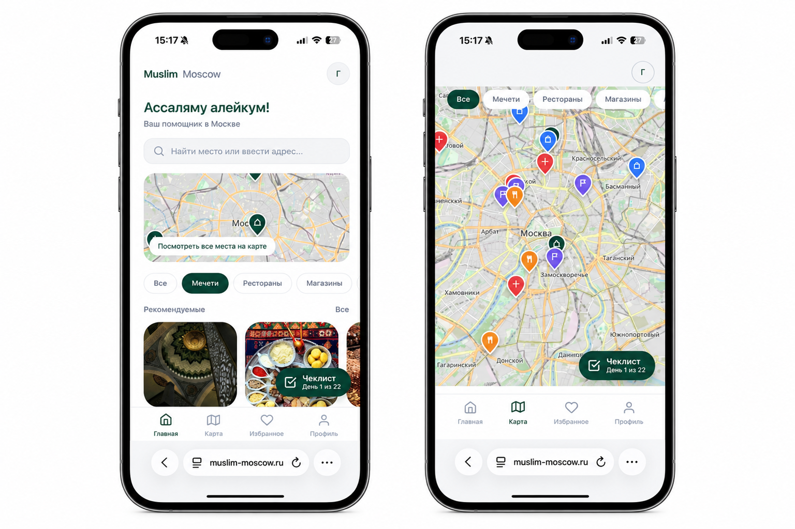

Muslim Moscow — городской гид для мусульман в Москве: интерактивная карта мечетей, халяльной еды и базовых сервисов, а также сценарий адаптации на первые 22 дня для тех, кто приехал в город впервые. Этот кейс о том, как результаты исследования превратились в конкретные решения продукта.
Попробуйте интерактивный прототип прямо на этой странице. Вы можете кликать по карте, искать места и открывать карточки.
Перед проектированием интерфейса я провела серию глубинных интервью (CustDev) и количественный опрос среди 67 мусульман, живущих в Москве или приезжающих в город (35 женщин и 32 мужчины).
Женские сценарии: для большинства опрошенных женщин критически важны закрытые помещения, отсутствие мужчин и мастера-женщины при выборе бьюти- и медицинских услуг.
Вместо регистрации приложение задаёт два коротких вопроса при первом входе. Они появляются как сообщения в чате поверх размытого приложения, а варианты ответа выглядят как реплики пользователя, поэтому прохождение занимает несколько секунд. Сценарий «Впервые в Москве» и «Живу здесь»: для новичков включается режим адаптации, для постоянных жителей — быстрый доступ к карте и поиску.
Чтобы снизить стресс от переезда или поездки, я спроектировала временный режим сопровождения. Тем, кто впервые в Москве, после опроса сообщают о чеклисте и анимацией показывают, где находится его кнопка. Кнопка отсчитывает дни пребывания («День N из 22») и исчезает по окончании периода адаптации. Окно чеклиста состоит из трёх вкладок: Рядом, Номера, Приложения.
Главный экран построен по принципу «польза с первой секунды»: быстрые виджеты (время ближайшего намаза, погода в Москве и расстояние до ближайшей мечети), интерактивная карта и фильтры, крупные карточки категорий для быстрого перехода.
В архитектуру карточек заложены параметры, которые отвечают на главную боль аудитории из опроса: наличие закрытых помещений и места для намаза, отметка о проверке данных. В планах: статус сертификации halal, актуальное расписание, информация о комнатах для омовения и процесс верификации.

[ Изображение: Мокап Muslim Moscow ]Схемы показывают все пути пользователя в приложении: от первого входа до чеклиста и профиля.
Блоки с акцентной рамкой видны только тем, кто впервые в Москве. Кнопка «Пропустить» на любом шаге ведёт на главный экран.
Поиск, карта и избранное ведут в одно окно места, откуда можно построить маршрут или добавить место в избранное.
Пункт «Номера и приложения» в профиле открывает то же окно, что и кнопка чеклиста, поэтому экстренные номера остаются под рукой и после 22 дней.
Ниже представлены обезличенные ответы респондентов, которые легли в основу продуктовых решений.
| Пол | Как давно в Москве? | Как часто ищете места? | Где ищете? | Что сложно? | Что сложнее всего найти? | Важность Muslim-friendly салонов | Что важно при выборе салона? | Что полезно в первые недели? | Насколько полезна подборка? | Какими функциями пользовались бы? | Что хотели бы видеть? |
|---|---|---|---|---|---|---|---|---|---|---|---|
| Женщина | От 1 года до 5 лет | Несколько раз в неделю | Спрашиваю у знакомых / родственников, Ищу вывески глазами на улице | Информация находится на разных площадках, Не всегда понятно, насколько можно доверять информации о halal | Мечети / места для молитвы, Halal-рестораны и кафе | Очень важно | Только женщины среди мастеров, Отсутствие мужчин среди посетителей, Возможность закрытого помещения, Возможность снять хиджаб, Женщина-мастер | Где находятся мечети, Где поесть halal, Где купить продукты | Очень полезна | Найти мечеть / место для молитвы, Найти halal-ресторан или кафе, Найти Muslim-friendly бьюти-салоны | . |
| Женщина | От 1 года до 5 лет | Несколько раз в месяц | Яндекс.Карты / 2ГИС, Telegram-каналы, чаты, WhatsApp-группы, Социальные сети (Instagram, TikTok), Спрашиваю у знакомых / родственников, Поисковики / обычный поиск в интернете | Не знаю, где искать информацию, Информация бывает устаревшей, Не всегда понятно, насколько можно доверять информации о halal, Не хватает подробной информации о месте, Неудобно сравнивать разные варианты | Мечети / места для молитвы, Halal-рестораны и кафе | Не имеет значения | Удобное расположение, Отзывы других мусульманок | Где поесть halal, Где купить продукты, Где получить медицинскую помощь, Какие места стоит посетить | Очень полезна | Найти halal-ресторан или кафе, Найти halal-магазин / супермаркет, Информация о halal и её подтверждении | Мечети, кафе/рестораны халяль, магазины с халяль продукцией (и какой именно продукцией), место совершения молитвы |
| Мужчина | От 1 года до 5 лет | Несколько раз в неделю | Яндекс.Карты / 2ГИС, Спрашиваю у знакомых / родственников | Не знаю, где искать информацию, Информация находится на разных площадках, Не хватает подробной информации о месте | Halal-рестораны и кафе | Не посещаю бьюти-салоны | Не посещаю бьюти-салоны | Где поесть halal, Где купить продукты, Где получить медицинскую помощь, Какие места стоит посетить | Не знаю | Найти мечеть / место для молитвы, Найти halal-ресторан или кафе, Найти halal-магазин / супермаркет | . |
| Женщина | От 1 года до 5 лет | Примерно раз в месяц | Яндекс.Карты / 2ГИС, Telegram-каналы, чаты, WhatsApp-группы, Социальные сети (Instagram, TikTok), Поисковики / обычный поиск в интернете | Не всегда понятно, насколько можно доверять информации о halal, Не хватает подробной информации о месте | Halal-рестораны и кафе, Женские салоны, Исламские товары / одежду | Не имеет значения | Отсутствие мужчин среди посетителей, Возможность закрытого помещения, Женщина-мастер | Где поесть halal, Где купить продукты, Как пользоваться транспортом, Какие места стоит посетить | Очень полезна | Найти halal-ресторан или кафе, Найти halal-магазин / супермаркет | Разделение на категории мест |
| Мужчина | От 1 года до 5 лет | Практически никогда | Ничего специально не ищу / уже знаю проверенные места | Обычно быстро нахожу всё необходимое | Мероприятия / сообщества | Не посещаю бьюти-салоны | Не посещаю бьюти-салоны | Мне такая информация не нужна | Совсем не нужна | Интерактивная карта, Информация о halal и её подтверждении, Гид для тех, кто впервые в Москве | Нет |
Product Management UX-исследования (CustDev) Информационная архитектура UI/UX-дизайн Фронтенд-разработка MVP